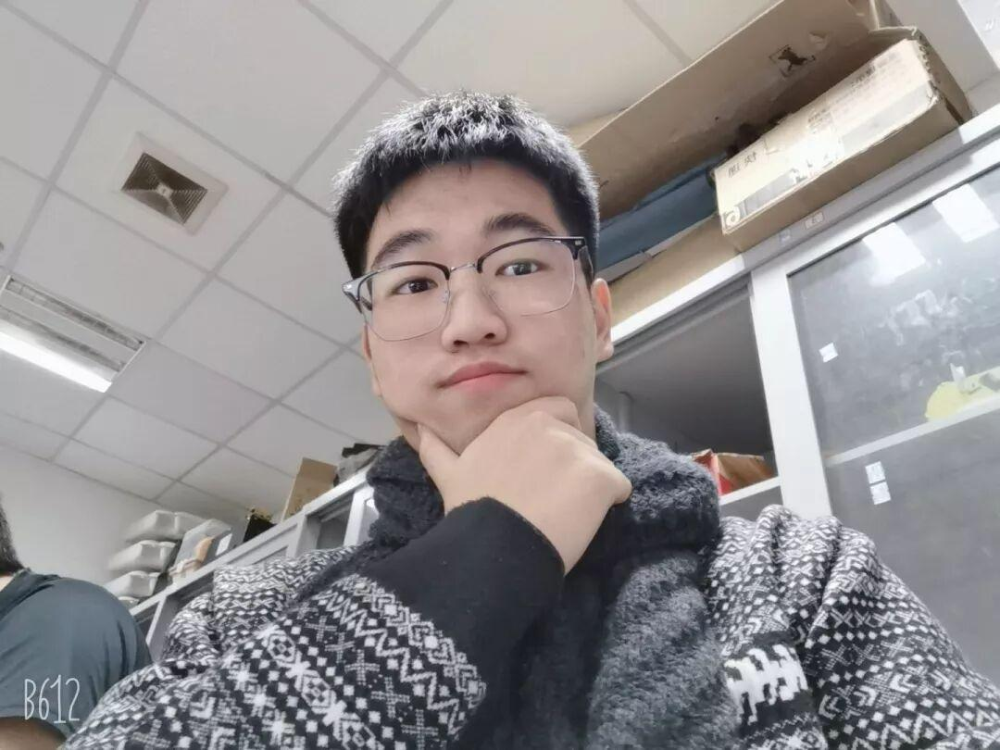
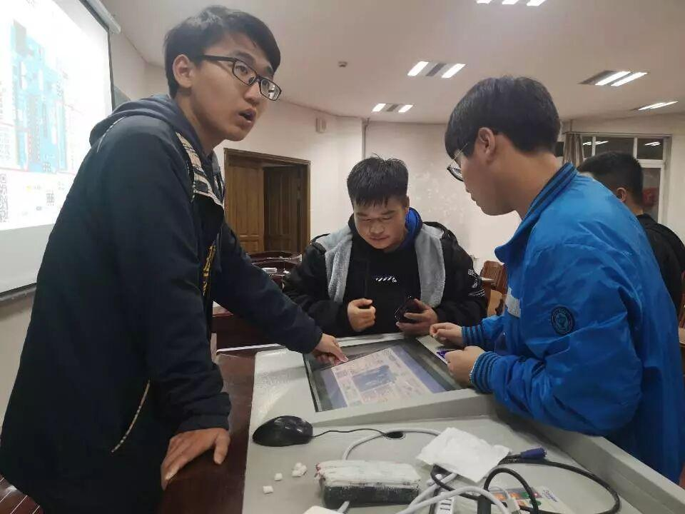
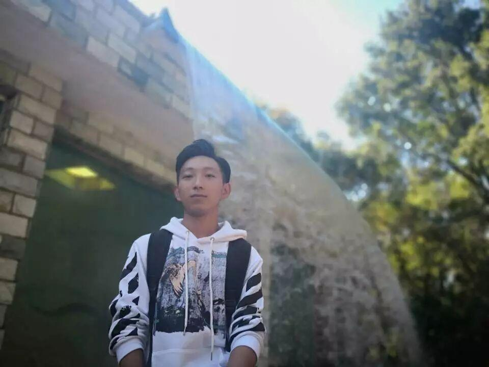
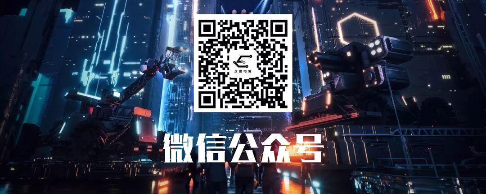

Ambition战队部分成员人物专访
Ambition战队
部分成员
人物专访
- 2020.01-
小编又来搞事情了~
为了向大家揭秘电协最神秘、炫酷的组织
现推出Ambition战队
部分成员的征婚专访系列

电控组 陈泽天


听听学长的自我介绍
大家好，我叫陈泽天，来自自动化与电气工程学院。目前是Ambition战队电控组成员。我逻辑严谨，写过无数的代码，掉过无数的头发，目前发量还算充足。我热爱生活，音乐美食都是熬夜的必备。最后希望战队能够在2020赛季赛出佳绩。（经过小编与学长短暂的接触发现这是一个非常有文采的学长呦！）

这确实是个 “小”采访
Q：为什么加入电协？
A:加入电协就是想做比赛，参加一些全国性的大型比赛。
Q:在电协有没有发生过什么印象深刻的事情？
A:印象最深的当然是和喜欢的女生表白啦。（咳咳，不知道学长是怎么把我们温柔可爱美丽大方的学姐追到手的，快教教我们这些单身dog吧！）
Q:有什么话想对大家说吗？
A:没什么特别想说的，就是无论大家现在在做什么，都希望大家能够坚持自己的梦想，能够坚持走下去。

电控组 李旭东


听听学长的自我介绍
我叫李旭东，来自18级电气工程及其自动化。目前是Ambition战队电控组成员，喜欢打篮球，经常调试代码到自闭，但是仍然喜欢写代码的feel。（👍 代码虐我千百遍，我待代码如初恋 ，这大概就是学长内心真实的os吧）

小采访又来啦~
Q:为什么加入电协？
A:加入电协首先是想遇到一群志同道合的人 ，其次是学习一些新的，好玩的东西。
Q:有什么话想对大家说吗？
A:有，在比赛最后阶段调试代码时，自闭过，但是没想过放弃。因为你的背后有一群挺你的人。
Q:加入电协以来自己最大的收获是什么？
A:我最大的收获就是遇到了一群能把后背交给他们的人。
Q:能说说自己对电协或者对自己未来的期望吗?
A:我希望电协能够带给学弟学妹更多的大学新的体验。让他们体验到一个不一样的大学生活。

视觉组 王培德


听听学长的自我介绍
王培德，战队视觉组预备队员一名，菜鸡一枚，希望大家多多关照。（经过小编验证，这是一个十分温柔且很有耐心的单身小哥哥呦！咳咳，小姐姐们赶快行动吧~）

咳咳，还是个小采访~
Q:在电协有没有发生过什么印象深刻的事情？
A:记得在做比赛时，熬倒晚上三点钟，机械的队友和我说：结构出问题了随时叫醒我。无论有多困，队友的一声呼喊，总能将他从梦乡中唤醒，唤醒他的不是那一声结构出问题了，而是心中的信仰吧。
Q:有什么话想对大家说吗？
A:希望和大家在电协度过充满激情，挥洒青春的一年。
Q:加入电协以来自己最大的收获是什么？
A:在电协收获最大的是一帮整天一起熬夜的朋友们，夜有多深，感情就有多深。还有那学到的各种知识。

运营组 张诗梦

听听学姐的自我介绍
宣传经理张诗梦（学姐说她要高冷，偷笑.jpg）

采访来啦~
Q：为什么加入电协？
A:开始觉得这个社团好酷哦，就加入了。加入以后发现我好喜欢这个社团，所以坚持下来了
Q：在电协有没有发生过什么印象深刻的事情？
A:影响深刻的事情的话，应该是他们对我做的暗黑海报的不可磨灭印象，各种奇葩审美。比如现在四个大旗上的大理石纹理（其实原来是水粉背景）
Q：有什么话想对大家说吗？
A:坚持好自己的路
Q：在电协中是否遇到过一些困难，有想过放弃吗？
A:没有，有过很难熬的时候，幸好没有放弃
Q：加入电协以来自己最大的收获是什么？
A:我很开心

硬件组 刘卉萱

听听学姐的自我介绍
大家好，我叫刘卉萱，是一名信息院的学生，现在是战队硬件组的一名成员。（没错，这还是个学姐哦~ 谁说我们战队都是男孩子的，傲娇.jpg）
这还是个小采访
Q:为什么加入电协？
A:就是喜欢，很喜欢机器人，也很喜欢动手制作。
Q:在电协中是否遇到过一些困难，有想过放弃吗？
A:困难嘛，说多不多，说少不少，最大的困难就是自己太菜了，有时候和别人交流都有点断层，别人说的我理解也很困难.放弃也是想过的，但是也都坚持过来了。
Q:加入电协以来自己最大的收获是什么？
A:最大收获，认识了很多朋友，有共同的喜好，梦想，追求。还有就是学到了很多知识，是书本上学不到的，利用这些知识，可以去实现自己的一些想法，一些小制作。

机械组 苏伟鹏

听听学长的自我介绍
我叫苏伟鹏，现在是电子技术与应用协会技术部机械组的一名成员，同时也是Ambition战队的预备队员。兴趣爱好就是没事做做机器人，画画图。希望有朝一日可以用自己所学到的知识做出一个让自己满意的机器人。(希望学长的愿望可以成真哦~）

小采访来啦~
Q:为什么加入电协？
A:最开始选择加入电协的原因是因为看了当时的ROBOMASTER，得知了沈理还有这样一个这么优秀的社团，自己也想着有一天可以站在同样的地方，去做同样的比赛，和一群志同道合的朋友一起奋斗一起努力。
Q:在电协有没有发生过什么印象深刻的事情？
A:印象最深刻的就是暑假期间大家一起做电子设计大赛，在那四天的准备时间里大家基本都没有怎么好好休息，支撑我坚持下去的就是大家在相互鼓励，相互帮助。我自己也从开始的不知所措，到中间的拼命赶制，再到在最后一天仍旧没有做出来的着急，和最后做出来的释然和轻松。
Q:能说说自己对电协或者对自己未来的期望吗？
A:希望电协在之后可以越走越好，越办越好，可以获得更多的奖项，吸引更多优秀的人才加入。对自己的期望就是把最近正在做的比赛好好做完，给自己一个满意的答复，也不辜负大家对我的期待。

小编有话说
经过本次采访小编发现：每个人心中都有一个机甲梦，即使很难 也永不言弃。
李诞曾说：人间不值得，但是小编觉得能和这么一群人一起奋战、一起追梦，真的很值得!

排版|辛学敏
图片|战队成员
想了解更多资讯，请关注我们~

